Every Yacht Style web address and channel in one place, with captures of the key pages of yachtstyle.co taken on 1 October 2026. Yacht Style Arabia will be a new site on its own domain. This page records what exists today, so the audit and the plan can always be read against what was measured.
The main menu has eleven items. Marinas opens twelve regional pages. All read on 1 October 2026.
| Channel | Address | What we read | Read |
|---|---|---|---|
| @yacht.style | 52K followers. UNVERIFIED on 1 Oct: the figure is from our reading of 30 Sep 2026 | 30 Sep 2026 | |
| facebook.com/YachtStyle.co | Linked from the header and footer. Follower count not read (login wall) | 1 Oct 2026 | |
| YouTube | Yacht Style channel | 608 subscribers | 1 Oct 2026 |
| Magzter | magzter.com, Yacht Style | Linked from the header. The page refused our fetch (HTTP 403), not captured | 1 Oct 2026 |
| Newsletter | yachtstyle.co/newsletter | Sign up form on its own page and in the footer. No archive of past issues | 1 Oct 2026 |
| News feed | yachtstyle.co/feed | RSS feed, live | 1 Oct 2026 |
| Not linked from yachtstyle.co | The header and footer carry Facebook, YouTube and Instagram only | 1 Oct 2026 |
| What | Address | Status on 1 October 2026 |
|---|---|---|
| The new domain | yachtstylearabia.com | FACT Registered 1 Oct 2026, 03:55 UTC, at GoDaddy. Name servers NS53 and NS54.DOMAINCONTROL.COM. It resolves to the registrar’s parking page. Nothing is live yet and it has no HTTPS certificate |
| An Arabia section on yachtstyle.co | None | FACT No menu item, category, tag or page for Arabia, the Gulf or the Middle East. yachtstyle.co/tag/dubai returns page not found |
| Gulf stories in the archive | yachtstyle.co, search “dubai” | FACT 224 of 3,525 posts match “Dubai”, 180 match “Middle East”, 39 “Saudi”, 38 “Abu Dhabi”, 24 “Qatar” |
| The newest Gulf story | UAE Yachting Alliance unites three emirates | FACT Published 1 October 2026, in News |
| The acquisition story | ITP Media Group Acquires Yacht Style | FACT Published 8 September 2026 |
| Gulf shows in the Logbook | yachtstyle.co/logbook | FACT The Pre-Owned Boat Show, Dubai, 31 Oct to 2 Nov; Qatar Boat Show, 4 to 7 Nov; Abu Dhabi International Boat Show, 19 to 22 Nov; and a Dubai International Boat Show banner, 25 to 29 Nov 2026 |
| Gulf marinas | None | FACT The marina directory covers twelve regions, all in East and Southeast Asia |
| Arabic | None | FACT The site declares US English, has no Arabic page and no right to left layout |
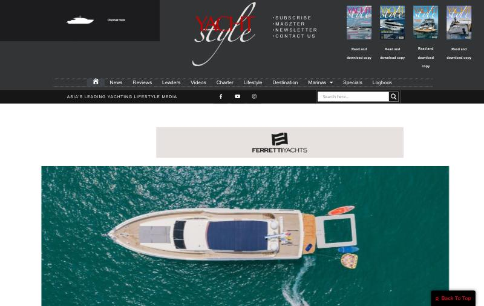
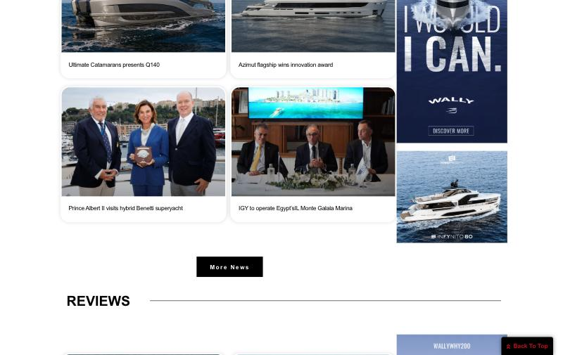
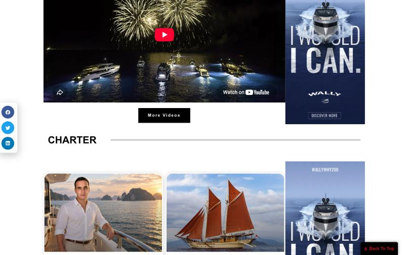
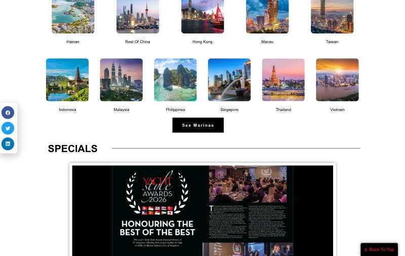
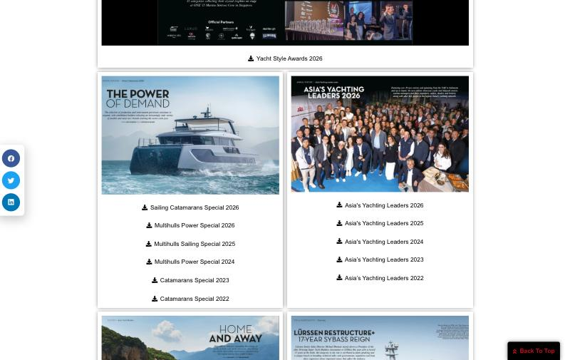
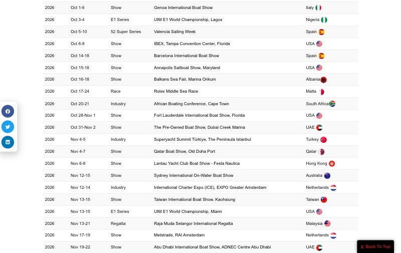
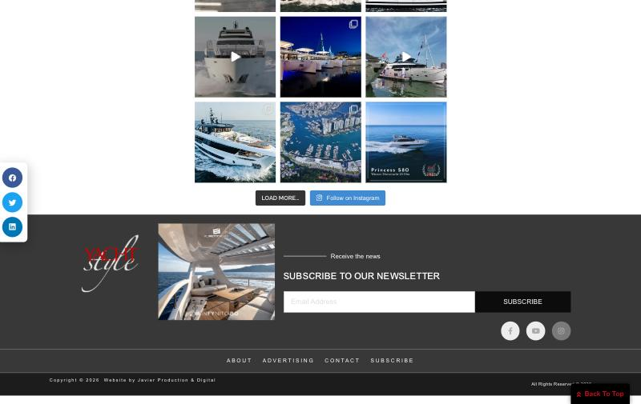
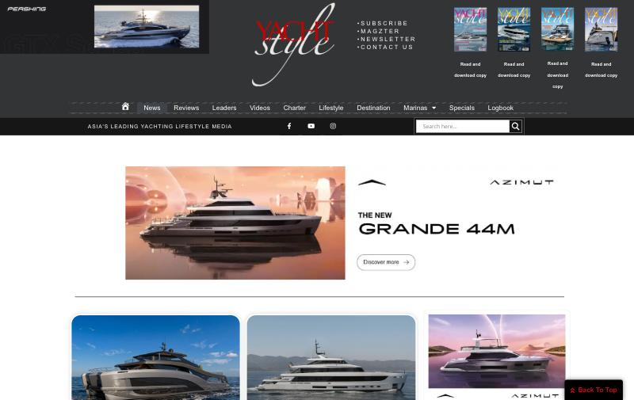
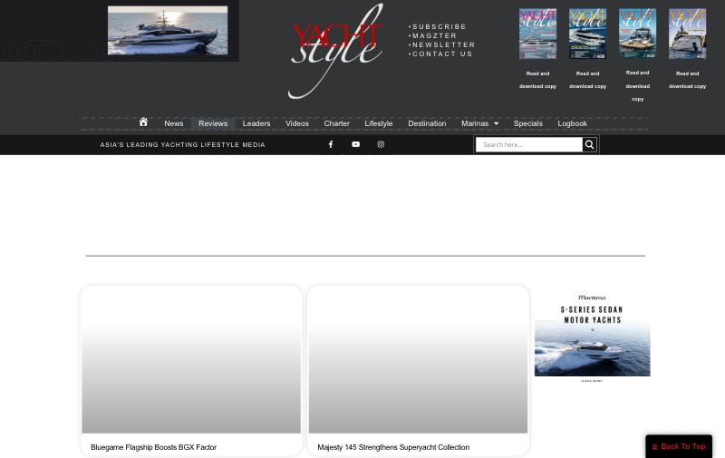
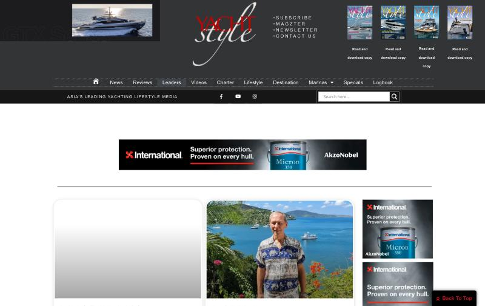
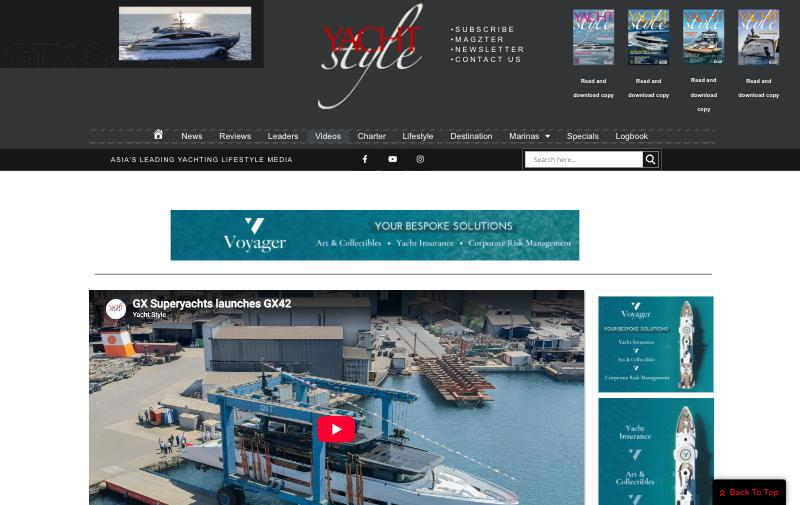
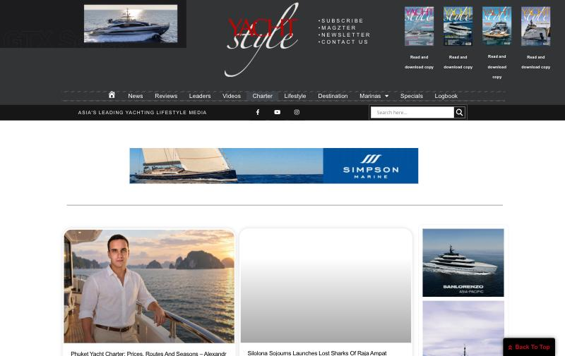
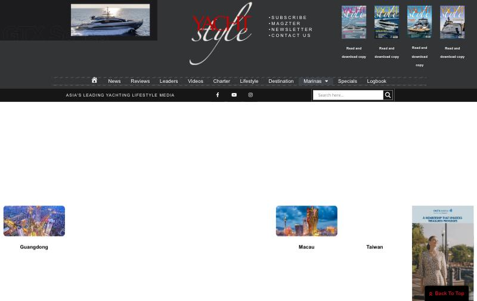
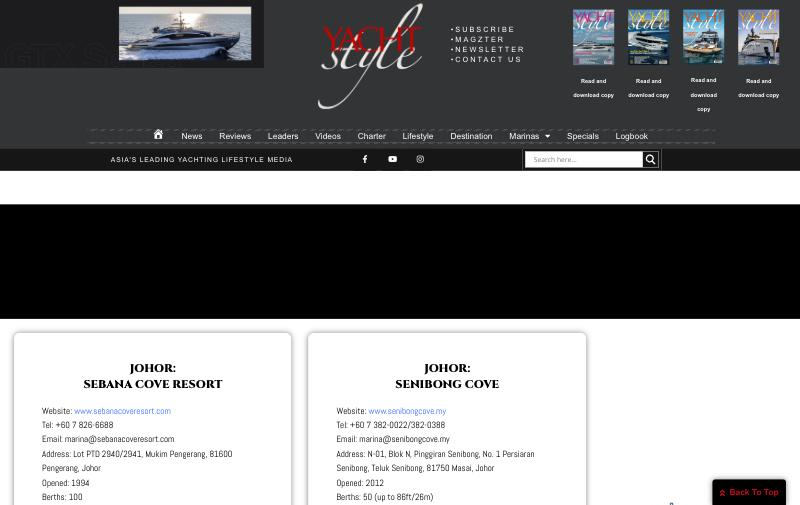
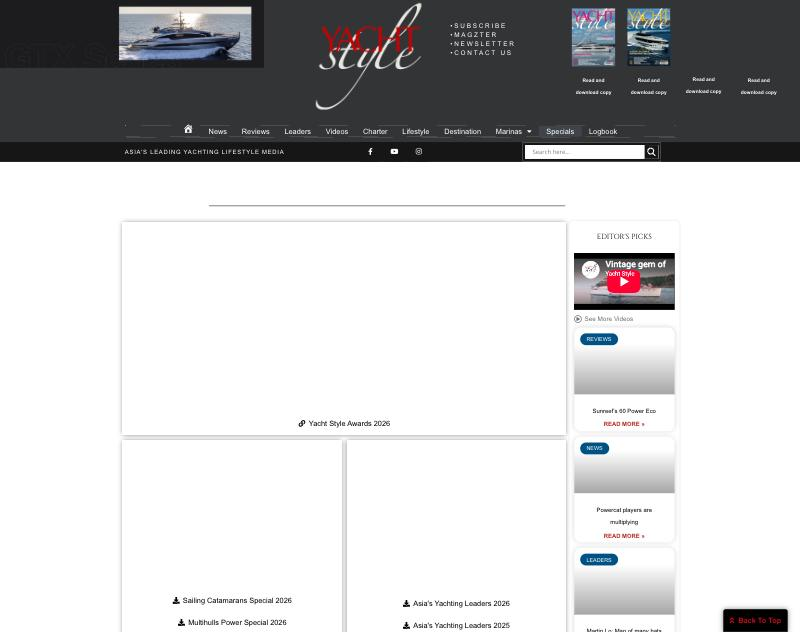
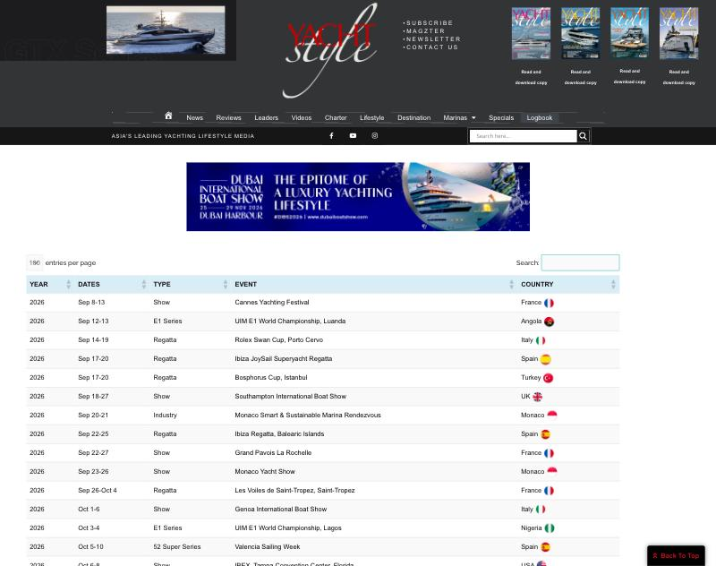
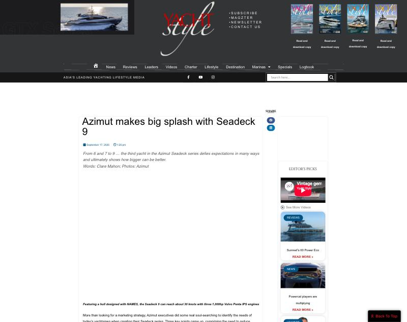
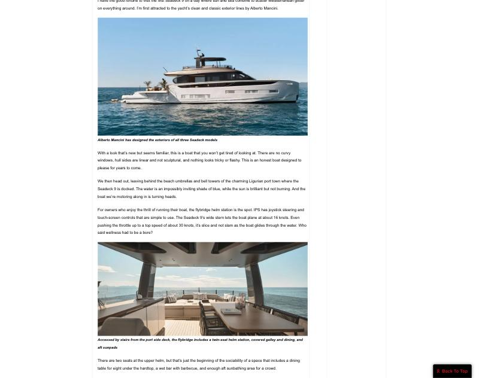
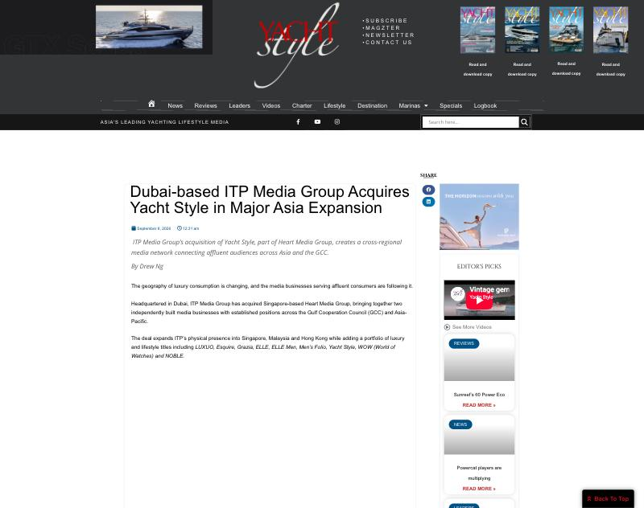
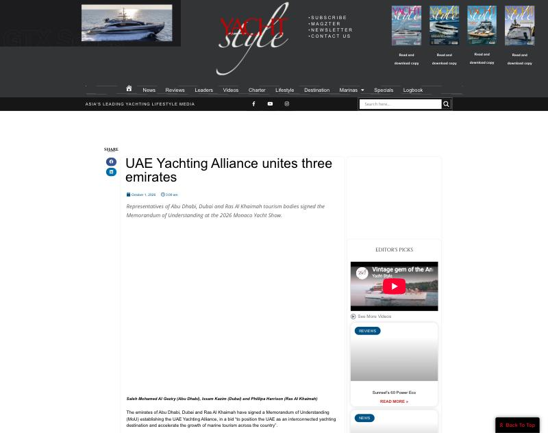
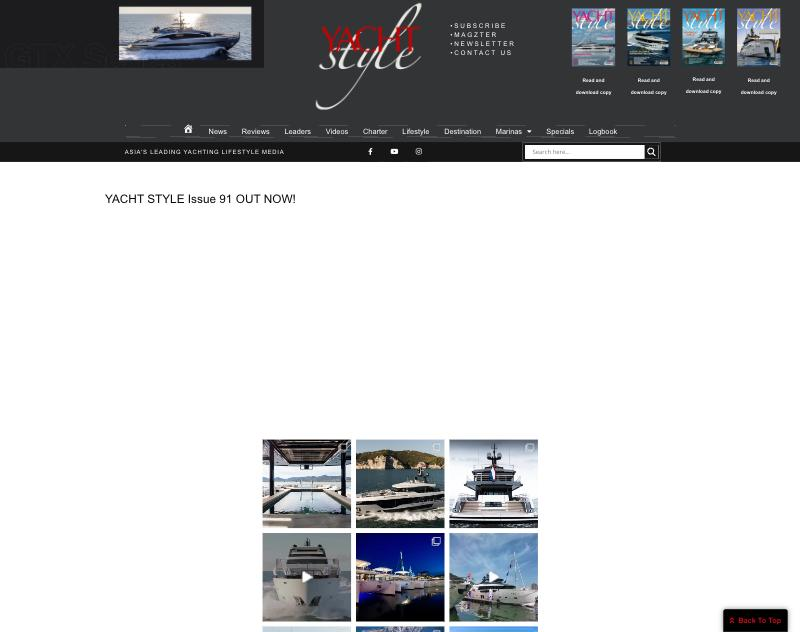
| Not captured | Detail |
|---|---|
| Every phone capture at 390 pixels | home, menu open, news, an article, marinas, logbook, subscribe |
| About, Advertising, Contact, Subscribe, Newsletter, For Sale, Shop, search results | read in full as page source and quoted in the audit, not captured as images |
| The footer Subscribe link | yachtstyle.co/subscribe-2 returns page not found; checked by fetch, not captured |
| itp.com brand page, Magzter | both refused our fetch; no check was bypassed |
| Instagram, Facebook, YouTube, the parked yachtstylearabia.com page | not captured |